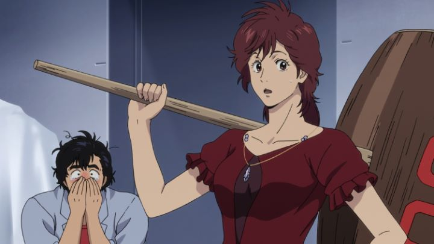

In 2019, fans got a treat in the long-awaited return on a classic anime franchise, two decades after its last outing, in the movie "City Hunter - Shinjuku Private Eyes."... to be clear, I'm a millenial that got into anime around the late 2000's, not an old fart that grew up on 80's anime. To me, for a show or film to truly be a "classic," it has to be a household name in the community; I have to know of it long before I actually watch it. I had not ever heard of "City Hunter," and would have remained ignorant if they didn't release the new film in question. It's cool to see a revival, but I had a similar reaction to a Kicksarter-funded Bluray release of a similar era OVA called "Riding Bean", or the recent "Mazinger Z - Infinity" film: my thought was "these action anime seem silly, why would anyone care about them?" Alternatively, after being used to cleaned up post-2000 animation for so long, it can be difficult to return to watching Japanese anime from decades earlier, with poor quality and extreme cost-saving messures in spades; at least with modern production values, "Shinjuku Private Eyes" could be watched by both old and new fans alike. But my experience (and lack there-of) doesn't represent the truth of it. "City Hunter" clearly has made an impact, with multiple films in the 90's, and multiple live action adaptations, including a 1993 Hong-Kong film starting Jackie Chan, a surprisingly-faithful 2019 film in France, and even a Korean tv series with ties to American production comapnies. It's amazing to think I hadn't heard of the franchise before now! Despite not being from the 80's, I immediately appreciated the throwbacks in the first five minutes, with wall-breaking references to the film technically taking place in present day. There's a rocking 80's-style soundtrack as you'd expect, but some modern touches thrown in, like an opening-credits rap by Lotus Juice. Most of the characters (I presume) return, but the movie makes clear that it takes place in modern times, with smartphones, limited augmented-reality app software, and drones. The lead heroes Ryo and Kaori are the same as ever, and despite not aging, appear to possibly have lived through the 80's and the 30 years that followed (or more likely, we're to assume this is just a reboot). Ryo's still stupidly cool, but also a pervert constantly looking for a kiss, following the old comedy trope (an early line from Kaori calls out the innocent gag as sexual harassment: "This isn't the 80's anymore!"). And there are still background references to other old franchises, like "Cat's Eye" (enough for this to practically be a crossover film), and the production comapny Sunrise still hides their name on stuff like license plates. Directed by Kenji Kodama, the original director from the series, it's clear this is a labor of love for both the team and old fans, and the marrage of new elements with old style works admirably well. Well... mostly well. Most of the dated elements and jokes are still there, it's just that they knowingly acknowledge it. One example is when Ryo and the female client of the movie go drinking, and the girl cries with relief to discover Kaori brought her home when she didn't remember the night, fearing what might have happened if Ryo did instead, being the pervert he is. Alcohol is gross and no one has ever been able to offer a single reason to me as to why they'd bother getting drunk, but regardless, this was a gross reminder of the realities women face compared to men, for the sake of comedy. His shenanigans and the mild fanservice go on a bit too much in the movie.  And you're kidding yourself if you expect the story to actually be any good. Ryo and Kaori are a team of private eye investigators, hired by a young woman as bodyguards out of fear for an unknown threat that already killed her father. There is indeed a diabolocal villain, but his reasons for causing the chaos are disappointing (although actually carrying things is more interesting). But the investigation of how things are discovered is clumsy, typically after multiple back-to-back meetings with the same characters within minutes in the film (why draw things out over two nights in the timeline, instead of a single meeting? That's inefficient for both the characters and the viewer!). "Shinjuku Private Eyes" is just cheesy, action-comedy fun. Of course Ryo can defy gravity, face a barrage of bullets without getting shot, and has perfect aim with a hand-pistol. And yes, Kaori carries a massive mallet hammer, whacking Ryo for his antics just as often as the bad guys. It's absurd, and that's part of the charm. There are just enough cool stand-off scenes to make the movie worth watching, and fans of the old series will, presumably, be estatic, getting exactly what they expected. The production values are definitely from 2019, with clean bold lines and colors, while keeping the style of character designs from the original anime and manga. The designs feel unique today, and not necessarily "old," a successful modern adaptation. But neither the characters or the backgrounds are particularly attractive or detailed either, and neither is the animation. It's mostly standard for an anime feature film today, like renewing an old mosaic with a new coat of paint, and calling it a day. Ah, but the standout treat is the soundtrack! Much of the score is standard, but Hollywood-action-level fare, but there are a few disco-inspired themes, and several familiar vocal tracks that'd fit right in at a Japanese karaoke bar. It makes for a worthy album to buy separately, and it enhances the nostalgia factor tremendously.Discotek released the movie shortly after its' Japanese release, a rare accquisition for them, as they specialize in much older shows and films. But when paired with accquiring the entire franchise, it fits their catalog. They went to the effort to provide a fun English dub too; of course, purists will want to hear to original Japanese cast reprising their roles, but the dub is worth watching. "City Hunter - Shinjuku Private Eyes" is, unsurprisingly, a movie best suited for fans of "City Hunter," and the general genre from that general period of anime. Even without the background, I found "Private Eyes" to be a decent entry point, still great fun is conveying nostalgia that shouldn't exist for me. Some of the humor doesn't work anymore, and it's glaring how many action anime there is by now to choose from, that's better, than this. If you have an anime club of older fans, watching this with a crowd ought to make for a fun night.
- "Ani" More reviews can be found at : https://2danicritic.github.io/ Previous review: review_Chivalry_of_a_Failed_Knight Next review: review_Claymore